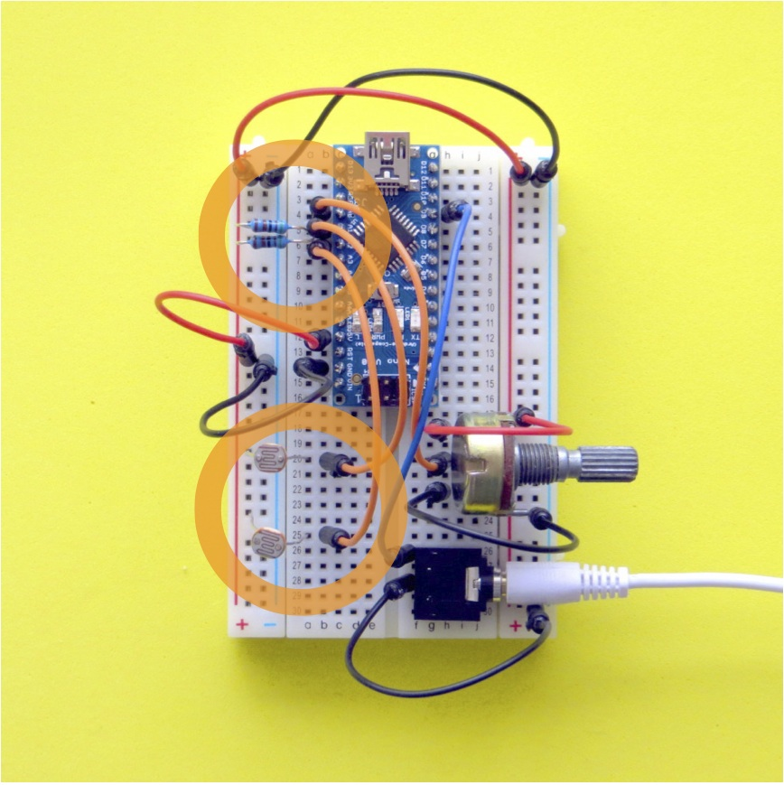

Mozzi, an Introductory Tutorial
Sounds from Sensors with Mozzi on an Arduino or clone
1. Parts list
Nano
Knob
Switch
LDR x 2
Piezo
5.1K resistor X 2
10K resistor
1M resistor
Red wire x 3
Black or White wire x 4
Yellow or Orange wire x 4
Blue wire
Audio socket
Audio cable
USB cable

Figure 1: Parts used in the tutorial
2. Arduino
Push the Nano into the breadboard with top left leg of the USB end at c1. Plug a mini USB cable into the Nano and connect it to your computer.
- Download the Arduino application, version 1.0.5 or better.
- Download and install FTDI drivers so Arduino can access the USB port.
- Start the Arduino application and set it up for a Nano clone. Arduino➞Tools➞Board➞Arduino Nano w/ Atmega 328
- Set it up to communicate through the USB port. Arduino➞Tools➞Serial Port➞usbserial
Let’s test it by uploading a program into the Nano through the USB serial port. Arduino➞File➞Examples➞Blink and press the ➜ (upload) button to upload the program to the Nano.
The red light on your nano should be blinking once per second. Edit the code to make the light blink twice as fast by changing the delay from 1000ms to 500ms. Yay, it works.

Figure 2: Nano on breadboard
3. Mozzi
Software
OK - now the Arduino is working we are ready to install Mozzi.
- Download Mozzi from Github.
- Now let’s import Mozzi into the Arduino system.
Go Arduino➞Sketch➞Import Library➞Add Library and select the Mozzi.zip file from your Downloads folder. - You should now be able to see Mozzi in the list under Arduino➞Sketch➞Import Library.
Wiring
When we wire things together on the breadboard let’s all use a common wire colour protocol.
+V ⇒ RED
-V ⇒ BLACK or WHITE
INPUTS ⇒ YELLOW or ORANGE
AUDIO ⇒ BLUE
Unplug the USB cable so that there is no power, just in case you plug a wire into the wrong place.
First let’s set up the power rails.
- Unplug the USB cable (!)
- Push a black wire into b14 which is GND on the Nano.
- Push the other end into the -V rail on the left of the board at row 14.
- Push another black wire into the top of the left hand -V rail and connect it across the board to the top of the right hand -V rail.
- Push a red wire into b12 that connects to the 5V pin on the Nano.
- Push the other end into the left +V rail at row 14.
- Push another red wire into the top left +V rail and connect it to the top of the right +V rail.

Figure 3: 5V and GND pins connected to +V and -V rails
Now let’s add a headphone socket so we can listen to sounds synthed on the Nano.
- Push the headphone socket into the bottom right hand corner of the breadboard at g26-g30.
- Push a blue wire into h4 that connects to the audio output pin D9 on the Nano.
- Push the other end of the blue wire into f26 which is the tip of the audio socket.
- Push a black wire into f28 to connect the GND on the audio socket and push the other end into the righthand -V rail.
Connect the audio cable to the audio output socket and the other end to the audio input on your computer.

Figure 4: Audio socket connected to PWM Audio Output Pin D9
Audio set up
You can listen to the sound on your computer by downloading and installing Audacity, a cross platform audio editor.
In Audacity,
- set the Input to Built-in Input, 1 (Mono).
- in the Project Rate (Hz) box, type 16384. This is Mozzi’s sample rate and will help show your waveforms clearly, otherwise they’ll appear as scrambled, aliased Pulse Width Modulated square waves.
Some new laptops have a single audio socket that requires a 4-pole audio input cable. If you don’t have the cable then just listen to the audio through headphones which will be a bit noisy but good enough for learning….
Testing Mozzi
Let’s test that it works with an example from the Mozzi library.
- Arduino➞File➞Examples➞Mozzi➞01.Basics➞Sinewave
- Connect the USB cable to your Nano and upload the code.
- Press the Record button in Audacity to hear the sound and adjust the input level slider to avoid distortion.
- For a more interesting example of the sounds that Mozzi can make, Arduino➞File-Examples➞Mozzi➞09.Delays➞ReverbTank_STANDARD
Try some of the other examples in the filters, delays, synthesis and sample folders to get a feel for what can be done.
4. Sensors
Now let’s move on the next stage of sensing some input.
A Knob
A knob (variable resistor, potentiometer or pot) has a middle connection which can be moved across a resistor, changing the resistance between the sweeping pin and each end.
Let’s make a circuit using a knob as a sensor.
- Unplug the USB cable to unpower the Nano.
- Push the 3 legs of the knob into the board at j18, j20 and j22, with the rotating part facing right.
- Connect a red wire from one end of the pot at f18 to the +V rail.
- Add an orange wire from the centre pin of the pot at f20 to b4 which connects to analog input pin A0 of the Nano.
- Add a black wire from the remaining leg of the potentiometer at f22 to the -V rail.

Figure 5: Knob as input to Analog Pin A0
Now the voltage on the analog input will go up and down as the knob is turned. Let’s use the knob to change the sound volume in a Mozzi sketch. Arduino➞File➞Examples➞Mozzi➞03.Sensors➞Volume_Knob
This program reads the voltage on Analog pin 0 as an integer from 0-1023.
- Click the Monitor button (magnifying glass) on the top right of the Arduino programming environment to read the value.
- In the monitor window, select 115200 baud to match the baud rate setup in the code. Now a stream of numbers should scroll down the monitor, varying between 0-1023 as you rotate the knob.
Light Dependent Resistors
A Light Dependent Resistor (LDR) changes resistance with the light level. Let’s use that to control an FM synthesis algorithm.
First, we’ll make the sensor circuit using a LDR and a 5.1k Resistor (green-brown-black-brown) as a voltage ladder as input to the Analog Input on the Nano.
- Unplug the USB cable to unpower the Nano.
- Push one leg of the LDR into a20 and the other leg into the +V rail.
- Connect an orange wire from the LDR at b20 to b5 which connects to the analog pin A1 of the Nano.
- Push one leg of the 5.1k resistor into a5 and the other leg into the -V rail.

Figure 6: LDR + resistor as input to Analog Pin A1
Now the voltage on the analog input will go up and down with the light level. The resistor stops high current draw on the USB port when the resistance of the LDR goes low.
Let’s test the LDR in a Mozzi sketch.
Arduino➞File➞Examples➞Mozzi➞03.Sensors➞Volume_Knob_LightLevel_Frequency
This program adds the LDR to the previous example, reading the voltage on Analog pin 1 to change the frequency of the sinewave. Use the Serial Monitor in the Arduino IDE to have a look at the numbers from the LDR. They should range somewhere between about 300-1000. Feel free to calibrate the sensor by changing the number mapping from the LDR to the oscillator frequency in the sketch.
Let’s try using the knob and LDR to modulate FM synthesis parameters. The knob sets the fundamental (or carrier) frequency and the LDR changes the modulation width, which affects the brightness of the sound. Arduino➞File➞Examples➞Mozzi➞03.Sensors➞Knob_LightLevel_FMsynth
Wow. Try to stay calm. We’re gonna make it twice as fun by adding another light level input to the FM synth.
- Unplug the Nano to depower it.
- Push the leg of another LDR into a25 and connect the other leg to the +V rail as before.
- Add an orange wire from the LDR at b25 to b6, which connects to Nano Analog Input A2.
- Push one leg of the 5.1k resistor into a6 and the other leg into the -V rail.

Figure 7: LDR + resistor as input to Analog Pin A2
Now upload the dual LDR + knob input FM synth into the Nano. Arduino➞File➞Examples➞Mozzi➞03.Sensors➞Knob_LightLevel_x2_FMsynth
The three inputs will produce a range of vibratos and timbre modulations that are great fun to mess around with (depending on how excitable you are). In the sketch, you can calibrate your own mappings from the sensors to the synthesis wherever you see “calibrate” in the comments.
The same inputs can be used to play lots of different kinds of synthesis. Here’s another sketch using the knob and two LDRs. This one makes vocal-like sounds using wavepacket synthesis. Arduino➞File➞Examples➞Mozzi➞03.Sensors➞LDR_x2_Knob_WavePacket
Piezo
A piezo creates a varying voltage when you squeeze it. We’ll use it as a sensor by measuring the voltage the piezo produces across a 1 megaOhm resistor (brown-black-black-yellow).
- Unplug the Nano to depower it.
- It can be a good idea to wrap some sticky tape around the piezo where the wires are soldered on, to protect the fragile connections.
- Plug the red wire of the piezo into a30 and the black wire into the -V rail.
- Add an orange wire from the piezo at b30 to b7 which connects to Nano analog input A3.
- Push one leg of the 1 megaOhm resistor into a7 and the other leg into the -V rail.

Figure 8: Piezo + resistor as input to Analog Pin A3
First, let’s get a feel for the piezo’s response with a simple patch. Arduino➞File➞Examples➞Mozzi➞03.Sensors➞Piezo_Frequency
Press on the piezo, tap it and scrape it to hear what it does. Notice it has a very fast response, especially a sharp attack and decay when it’s knocked. There are a couple of commented-out modifications in the sketch which can be uncommented to play around with the dynamics of the piezo signal.
Now we’ll use the sharp attack of the piezo to trigger a recorded audio sample to play, and for fun we can twist the knob to change the playback rate. Arduino➞File➞Examples➞Mozzi➞03.Sensors➞Piezo_SampleTrigger
The next sketch uses pressure on the piezo to scrub through a sample by changing the starting position. It’s crude, but you get the idea… Arduino➞File➞Examples➞Mozzi➞03.Sensors➞Piezo_SampleScrubber
Button
So far all of the sensor inputs have been analog. Now we’ll add a digital input with a Button and a 10k Resistor (brown-black-black-red).
- Unplug the Nano to depower it.
- Push the button into the breadboard with one leg in j9 which connects to digital input D4, and the other leg in the +V rail.
- Add the 10k resistor from h9 to the -V rail.

Figure 9: Button + resistor as input to Digital Pin D4
When the button is pressed, the digital pin is connected to +V, and the voltage at the pin will be high. When the button is not pressed, the pin is pulled to -V through the resistor and will be read as low by the Nano.
Let’s use the button to change the pitch of a sample trigger by the piezo.
Arduino➞File➞Examples➞Mozzi➞03.Sensors➞Piezo_Switch_Pitch
You can think of a better use for a switch than that!
5. Go to town
Now we’ve got some experience using sensors to generate sounds, it’s time to expand the frontiers of sensor-based microsynthesis!
6. Resources
Mozzi Programming Reference
Output circuits for cleaner sounding audio
Tips for effective Mozzi programming
Tim Barrass and Stephen Barrass 2013. This work is licensed under the Creative Commons Attribution-NonCommercial- ShareAlike 3.0 Unported License. To view a copy of this license, visit http://creativecommons.org/licenses/by-nc-sa/3.0/.